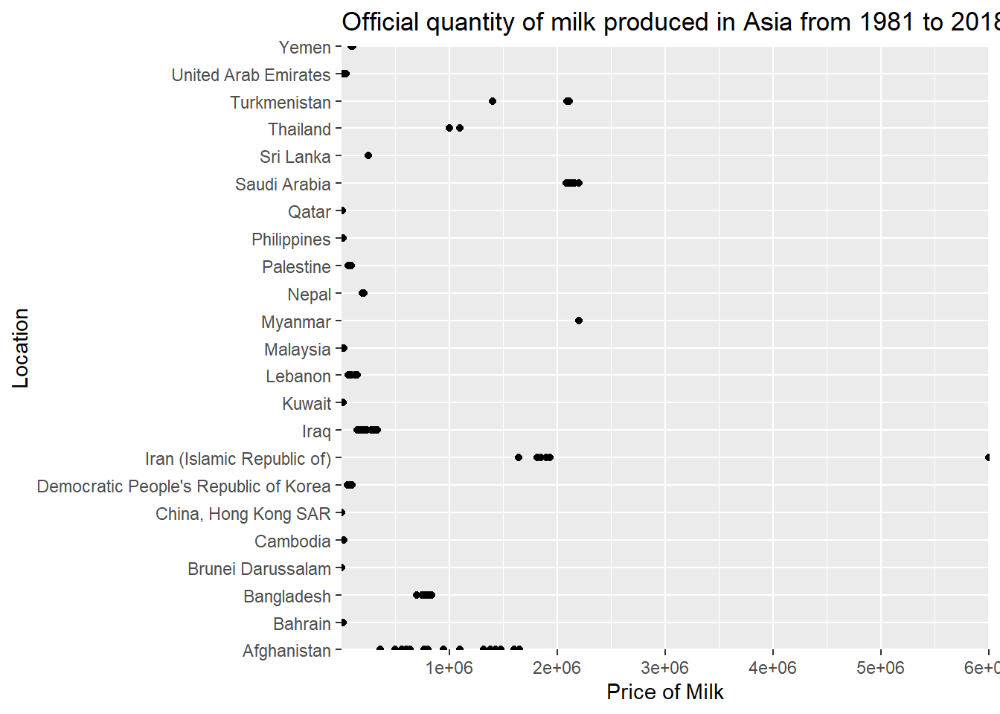
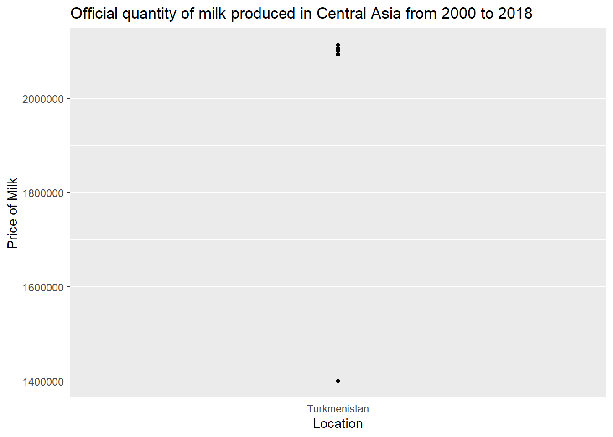

library(tidyverse)
library(ggplot2)
knitr::opts_chunk$set(echo = TRUE, warning=FALSE, message=FALSE)Challenge 8 Instructions
challenge_8
railroads
snl
faostat
debt
Joining Data
Challenge Overview
Today’s challenge is to:
- read in multiple data sets, and describe the data set using both words and any supporting information (e.g., tables, etc)
- tidy data (as needed, including sanity checks)
- mutate variables as needed (including sanity checks)
- join two or more data sets and analyze some aspect of the joined data
(be sure to only include the category tags for the data you use!)
Read in data
library(readr)
faostat_country_data <- read_csv("_data/FAOSTAT_country_groups.csv")
faostat_cattle_data <- read_csv("_data/FAOSTAT_cattle_dairy.csv")
View(faostat_country_data)
View(faostat_cattle_data)# Preview the first few rows of the dataset
head(faostat_country_data)# A tibble: 6 × 7
`Country Group Code` `Country Group` Country…¹ Country M49 C…² ISO2 …³ ISO3 …⁴
<dbl> <chr> <dbl> <chr> <chr> <chr> <chr>
1 5100 Africa 4 Algeria 012 DZ DZA
2 5100 Africa 7 Angola 024 AO AGO
3 5100 Africa 53 Benin 204 BJ BEN
4 5100 Africa 20 Botswa… 072 BW BWA
5 5100 Africa 233 Burkin… 854 BF BFA
6 5100 Africa 29 Burundi 108 BI BDI
# … with abbreviated variable names ¹`Country Code`, ²`M49 Code`, ³`ISO2 Code`,
# ⁴`ISO3 Code`head(faostat_cattle_data)# A tibble: 6 × 14
Domai…¹ Domain Area …² Area Eleme…³ Element Item …⁴ Item Year …⁵ Year Unit
<chr> <chr> <dbl> <chr> <dbl> <chr> <dbl> <chr> <dbl> <dbl> <chr>
1 QL Lives… 2 Afgh… 5318 Milk A… 882 Milk… 1961 1961 Head
2 QL Lives… 2 Afgh… 5420 Yield 882 Milk… 1961 1961 hg/An
3 QL Lives… 2 Afgh… 5510 Produc… 882 Milk… 1961 1961 tonn…
4 QL Lives… 2 Afgh… 5318 Milk A… 882 Milk… 1962 1962 Head
5 QL Lives… 2 Afgh… 5420 Yield 882 Milk… 1962 1962 hg/An
6 QL Lives… 2 Afgh… 5510 Produc… 882 Milk… 1962 1962 tonn…
# … with 3 more variables: Value <dbl>, Flag <chr>, `Flag Description` <chr>,
# and abbreviated variable names ¹`Domain Code`, ²`Area Code`,
# ³`Element Code`, ⁴`Item Code`, ⁵`Year Code`# Understanding the dimensions of the dataset
dim(faostat_country_data)[1] 1943 7dim(faostat_cattle_data)[1] 36449 14# Identifying the column names of the dataset
colnames(faostat_country_data)[1] "Country Group Code" "Country Group" "Country Code"
[4] "Country" "M49 Code" "ISO2 Code"
[7] "ISO3 Code" colnames(faostat_cattle_data) [1] "Domain Code" "Domain" "Area Code" "Area"
[5] "Element Code" "Element" "Item Code" "Item"
[9] "Year Code" "Year" "Unit" "Value"
[13] "Flag" "Flag Description"# Identifying the data types of the columns
sapply(faostat_country_data, class)Country Group Code Country Group Country Code Country
"numeric" "character" "numeric" "character"
M49 Code ISO2 Code ISO3 Code
"character" "character" "character" table(sapply(faostat_country_data, function(x) typeof(x)))
character double
5 2 sapply(faostat_cattle_data, class) Domain Code Domain Area Code Area
"character" "character" "numeric" "character"
Element Code Element Item Code Item
"numeric" "character" "numeric" "character"
Year Code Year Unit Value
"numeric" "numeric" "character" "numeric"
Flag Flag Description
"character" "character" table(sapply(faostat_cattle_data, function(x) typeof(x)))
character double
8 6 Briefly describe the data
I chose FAOSTAT_country_groups.csv and FAOSTAT_cattle_dairy.csv datasets. In the first dataset, the codes for each country is present. In second dataset, the livestock data in different countries, along with the values of different elements from 1961 to 2018 is present. First dataset has 1943 rows and 7 columns out of which there are 5 character types and 2 double datatypes. In the second dataset, there are 36449 rows and 14 columns out of which there are 8 characters and 6 double datatypes. I will use the country code in first dataset and area code in the second dataset to join the two datasets and perform analysis.
Tidy Data (as needed)
Is your data already tidy, or is there work to be done? Be sure to anticipate your end result to provide a sanity check, and document your work here.
# renaming the column value area code in cattle_diary dataset
faostat_cattle_data_new <- faostat_cattle_data %>%
rename("Country Code"= "Area Code")
head(faostat_cattle_data_new)# A tibble: 6 × 14
Domai…¹ Domain Count…² Area Eleme…³ Element Item …⁴ Item Year …⁵ Year Unit
<chr> <chr> <dbl> <chr> <dbl> <chr> <dbl> <chr> <dbl> <dbl> <chr>
1 QL Lives… 2 Afgh… 5318 Milk A… 882 Milk… 1961 1961 Head
2 QL Lives… 2 Afgh… 5420 Yield 882 Milk… 1961 1961 hg/An
3 QL Lives… 2 Afgh… 5510 Produc… 882 Milk… 1961 1961 tonn…
4 QL Lives… 2 Afgh… 5318 Milk A… 882 Milk… 1962 1962 Head
5 QL Lives… 2 Afgh… 5420 Yield 882 Milk… 1962 1962 hg/An
6 QL Lives… 2 Afgh… 5510 Produc… 882 Milk… 1962 1962 tonn…
# … with 3 more variables: Value <dbl>, Flag <chr>, `Flag Description` <chr>,
# and abbreviated variable names ¹`Domain Code`, ²`Country Code`,
# ³`Element Code`, ⁴`Item Code`, ⁵`Year Code`Join Data
Like I have mentioned previously, I will use Country Code column to join both the datasets.
df_join <- faostat_cattle_data_new %>%
left_join(faostat_country_data, by = "Country Code")
df_join# A tibble: 257,061 × 20
Domain Cod…¹ Domain Count…² Area Eleme…³ Element Item …⁴ Item Year …⁵ Year
<chr> <chr> <dbl> <chr> <dbl> <chr> <dbl> <chr> <dbl> <dbl>
1 QL Lives… 2 Afgh… 5318 Milk A… 882 Milk… 1961 1961
2 QL Lives… 2 Afgh… 5318 Milk A… 882 Milk… 1961 1961
3 QL Lives… 2 Afgh… 5318 Milk A… 882 Milk… 1961 1961
4 QL Lives… 2 Afgh… 5318 Milk A… 882 Milk… 1961 1961
5 QL Lives… 2 Afgh… 5318 Milk A… 882 Milk… 1961 1961
6 QL Lives… 2 Afgh… 5318 Milk A… 882 Milk… 1961 1961
7 QL Lives… 2 Afgh… 5318 Milk A… 882 Milk… 1961 1961
8 QL Lives… 2 Afgh… 5318 Milk A… 882 Milk… 1961 1961
9 QL Lives… 2 Afgh… 5318 Milk A… 882 Milk… 1961 1961
10 QL Lives… 2 Afgh… 5318 Milk A… 882 Milk… 1961 1961
# … with 257,051 more rows, 10 more variables: Unit <chr>, Value <dbl>,
# Flag <chr>, `Flag Description` <chr>, `Country Group Code` <dbl>,
# `Country Group` <chr>, Country <chr>, `M49 Code` <chr>, `ISO2 Code` <chr>,
# `ISO3 Code` <chr>, and abbreviated variable names ¹`Domain Code`,
# ²`Country Code`, ³`Element Code`, ⁴`Item Code`, ⁵`Year Code`Now, using the above dataframe, we will be able to perform analysis like analyzing the value of milk in different years across different years(from 1981 to 2018) among different country groups.
df_join %>% filter(Year >= 1981) %>%
filter(`Country Group` == "Asia") %>%
filter(Flag == "F") %>%
filter(Unit == "tonnes") %>%
ggplot(aes(x = `Area`, y = `Value`))+ geom_point()+ coord_flip(expand = FALSE)+ labs(title = "Official quantity of milk produced in Asia from 1981 to 2018", y = "Price of Milk", x = "Location")
df_join %>% filter(Year >= 2000) %>%
filter(`Country Group` == "Central Asia") %>%
filter(Flag == "F") %>%
filter(Unit == "tonnes") %>%
ggplot(aes(x = `Area`, y = `Value`))+ geom_point()+ labs(title = "Official quantity of milk produced in Central Asia from 2000 to 2018", y = "Price of Milk", x = "Location")